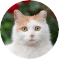
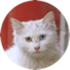
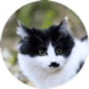

三花和玳瑁

橘猫和橘白

纯色

奶牛
狸花
所有
流浪猫客观上会对校内野生物种（主要是部分鸟类）产生负面影响。如果目击到流浪猫正在捕猎，我们鼓励同学们采取安全手段加以阻止。
若您在校内偶遇流浪猫，切记人类的食物不要喂给流浪猫！
🚫巧克力、葡萄制品、大葱、洋葱等食品对猫有毒，可能会引起急性肾衰竭，切不可以喂食！
🚫火腿肠和牛奶也并不适合猫咪，会引起肠胃反应，造成腹泻等状况。
🚫酸性的各类水果、香辛料制的肉类、乌贼等海产也均不适合猫咪食用。
猫常见的较合适的食物有猫粮、猫罐头、以及其它一些猫咪零食。
这里是三花和玳瑁的详细信息
这里是的详细信息
分类：